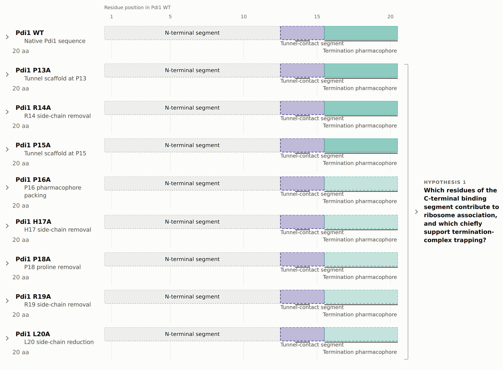
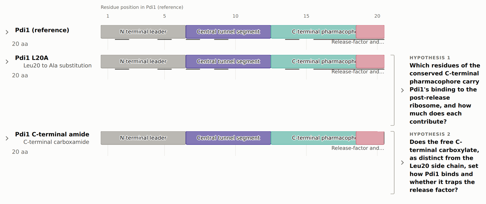

GPT 6.1 sol (high)
Also in this library: P13A, the one position in the C-terminal segment the paper did not scan, and R7A, an arginine well upstream, as a control.
Construct Maps / Pdi1: which residues bind the ribosome
Type II proline-rich antimicrobial peptides, such as the honeybee peptide apidaecin, bind in the ribosome's exit tunnel after a protein has been released and trap the release factors there 1. Genome mining has found dozens of related insect peptides, and those that keep apidaecin's conserved C-terminal sequence (PHPRL) trap ribosomes at stop codons in the same way 1. Pdi1, from the wasp Pimpla disparis, ends in that sequence. Structure-activity studies have focused on apidaecin itself 2, so which Pdi1 residues the ribosome depends on, and which matter only for trapping the release factor, was not known.
The prompt we gave GPT and Claude
Design a library of variants of the proline-rich antimicrobial peptide Pdi1 (wasp Pimpla disparis, GKPNRPRPAPIQPRPPHPRL) to identify which residues drive its binding to the bacterial ribosome. Only use literature published before 2026-01-01.
GPT 6.1 sol (high)
Also in this library: P13A, the one position in the C-terminal segment the paper did not scan, and R7A, an arginine well upstream, as a control.
Claude Sonnet 5.5 (high)
Also in this library: K2A/R5A/R7A, which remove three positive charges from the leader, and A9Y, which puts a tyrosine where apidaecin has Tyr7.

GPT measures each variant two ways: binding to ribosomes alone, and binding to ribosomes in the post-release state with a release factor and tRNA present, together with a toeprint that shows whether the peptide still stalls the ribosome at the stop codon. A residue that matters in both states is a contact with the ribosome. One that matters only in the second state is needed to trap the release factor.
According to GPT's record, three of the positions (14, 18 and 19) already had preliminary evidence from a 2024 conference abstract that alanine lowered binding 3, so those are deliberate replications. The other positions test which other residues matter. pdi1-r7a, an arginine far upstream, shows whether removing any one arginine has the same effect as pdi1-r14a or pdi1-r19a.
pdi1-r19a from the design recordpdi1-r19a in GPT 6.1 sol (high). Reproduce the reported Pdi1-sensitive site and distinguish ribosome association from RF-complex stabilization.
pdi1-amide) and L20A. The amide has the same twenty letters as Pdi1, and only the cap on the chain differs. L20A removes the Leu20 side chain and keeps the carboxylate, so the two together separate the terminal group from the side chain. Open the full interactive map (Claude).A sequence can't show this change, because the amide and wild type have the same letters. The design record stores it as a C-terminal cap on the chain, so the amide appears on the map as its own construct next to L20A. In apidaecin derivatives, amidation lets the peptide occupy a third binding pocket and the amidated peptide interferes with translation presumably without trapping the release factor 4. If amidated Pdi1 binds the ribosome but no longer stalls it at the stop codon, the terminal group matters for trapping and the Leu20 side chain for something else.
The comparison has a limit. Amidation also adds one positive charge, so a change in binding could reflect electrostatics and not the lost carboxylate.
pdi1-amide from the design recordpdi1-amide in Claude Sonnet 5.5 (high). Replaces the terminal carboxylic acid with a primary amide. A chemistry change has no edit form.The paper, published in 2026, measured binding by biolayer interferometry (BLI), with each peptide tethered through an N-terminal biotin–PEG24 linker to a streptavidin sensor 5. Wild-type Pdi1 bound the ribosome with a dissociation constant of 209 ± 24 pM and a residence time of about 24 minutes. In the alanine scan, P15A, P16A, H17A and L20A changed binding little, while R14A, P18A and R19A bound less well and came off the ribosome about 2 to 5 times faster 5.
Cell assays showed that binding is not the whole story. In an E. coli stop-codon readthrough assay, R14A, P18A and R19A left little or no zone of clearance, while H17A kept a clear antibiotic effect but produced no fluorescent halo, so it did not inhibit termination at sub-inhibitory concentrations 5. In broth, the MIC of R14A was 41-fold higher than wild type and the MIC of R19A more than 1,333-fold higher, whereas P18A (0.35 µM) and H17A (0.75 µM) were close to each other 5. Toeprinting showed that H17A and R19A both fail to stall ribosomes at the stop codon, so His17 is needed for termination inhibition as well as the penultimate arginine 5.
Both libraries scanned the right segment. GPT's scan covered positions 13 to 20, which includes all seven the paper scanned, and added R7A as an upstream control. Claude scanned six positions and left out P13 and P15, so it has no counterpart to P15A, one of the positions the paper found tolerant. Both libraries paired binding with a stop-codon toeprint, the assay that separated H17A from the other variants. Neither included the scrambled Pdi1 the paper used as a negative control 5.
Claude's plan names competition fluorescence polarization or BLI for measuring binding. The paper found that fluorescence anisotropy did not work well here: binding did not saturate even above 10 µM ribosome, and the competition experiment was inconclusive. It used BLI instead 5.
The paper also shows why a sequence is not the whole design. Its assays used chemically modified peptides: an N-terminal biotin–PEG24 linker for BLI and a fluorescein label for anisotropy. The PEGylated peptide had reduced activity (MIC 25 µM), though still 4-fold better than the scrambled control, and both modified peptides still stalled ribosomes at the stop codon, to different extents 5. Claude's amide is the only chemical change in either library, and the paper did not test it. Neither library included a conjugate or a label.
| Tested in the paper | GPT 6.1 sol (high) | Claude Sonnet 5.5 (high) |
|---|---|---|
| Alanine substitutions along the C-terminus: R14A, P15A, P16A, H17A, P18A, R19A, L20AResults: Evaluation of Pdi1 Binding Affinity; Table 2 and Supplemental Material | Same editpdi1-r14a pdi1-p15a pdi1-p16a pdi1-h17a pdi1-p18a pdi1-r19a pdi1-l20aall seven, plus P13A | RelatedR14A P16A H17A P18A R19A L20Asix of the seven; no P15A |
| H17A, which lost termination inhibition while keeping a submicromolar MICResults: Evaluation of Ribosome Stalling for Pdi1 Derivatives; Antibiotic Activity of Pdi1 Derivatives | Same editpdi1-h17a | Same editH17A |
| A scrambled Pdi1, the negative controlResults: Antibiotic Activity of Pdi1 Derivatives | Not proposed | Not proposed |
| PEGylated Pdi1 and fluorescein-labeled Pdi1chemically modified reporter peptidesResults: Antibiotic Activity of Pdi1 Derivatives; Evaluation of Ribosome Stalling for Pdi1 Derivatives | Not proposed | Not proposedits only chemical change is a C-terminal amide, which the paper did not test |
✓ same edit · ~ related: a different change at the same position, or the same idea · – not proposed. Construct names are the ones each library uses.